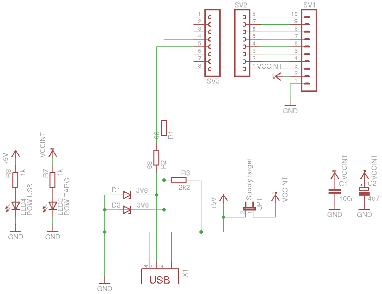

8. V-USB Adapter¶
Status: OK
- TODO:
- connect pullup with IO port
8.1. Schematic¶

8.3. Partlist¶
part value position C1 100n (0.9 0.25) C2 4u7 (1.1 0.25) D1 3V6 (1.7 0.45) D2 3V6 (1.6 0.5) JP1 Supply target (2.3 1.05) LED3 POW TARG (1.8 0.75) LED4 POW USB (2.2 0.85) R1 68 (1.1 0.6) R2 68 (1.3 0.5) R3 2k2 (1.5 0.45) R7 1k (1.6 0.9) R8 1k (1.2 0.7) SV1 (0.5 0.65) SV2 (0.7 0.75) SV3 (0.9 0.75) X1 (2.1 0.45)
8.5. original source¶
http://vusb.wikidot.com/hardware

“Solution B: Level conversion on D+ and D- Level conversion with Zener diodes.
Instead of reducing the AVR’s power supply, we can limit the output voltage on D+ and D- with Zener diodes. We recommend 3.6 V low power types, those that look like 1N4148 (usually 500 mW or less). Low power types are required because they have less capacitance and thus cause less distortion on the data lines. And 3.6 V is better than 3.3 V because 3.3 V diodes yield only ca. 2.7 V in conjunction with an 1.5 kΩ (or more exactly 10 kΩ) pull-up resistor. With 3.3 V diodes, the device may not be detected reliably.
If you use Zener diodes for level conversion, please measure the voltage levels to make sure that the diodes you have chosen match the requirements.
Advantages of the Zener diode approach:
- Low cost.
- Easy to obtain.
- Entire design can be at 5 V.
- AVR can be clocked at high rates.
Disadvantages:
- Not a clean solution, a compromise between all parameters must be found.
- Zener diodes come with a broad range of characteristics, especially at low currents, results may not be reproducible.
- High currents when sending high-level.
- High level is different for signaling and in idle state because signaling uses high currents to drive the diodes while idle state is driven by a 1.5 kΩ pull-up resistor.”